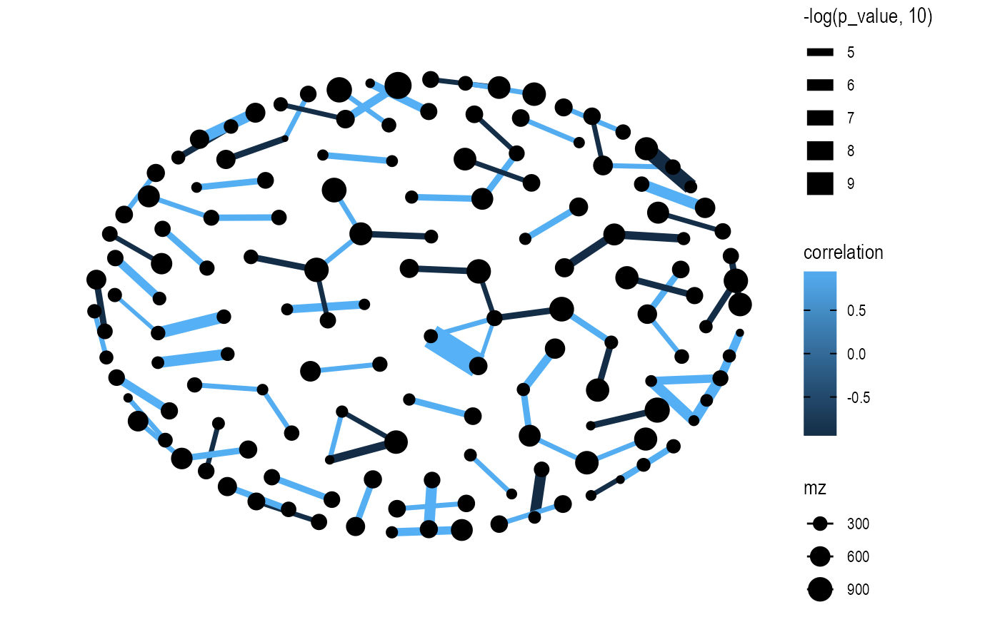
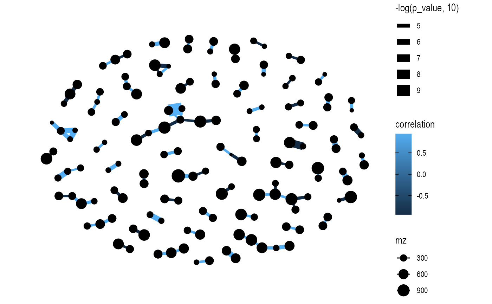

vignettes/correlation_network.Rmd
correlation_network.Rmd
library(massstat)
library(magrittr)
library(dplyr)
data("liver_aging_pos")
liver_aging_pos
#> --------------------
#> massdataset version: 0.01
#> --------------------
#> 1.expression_data:[ 21607 x 24 data.frame]
#> 2.sample_info:[ 24 x 4 data.frame]
#> 3.variable_info:[ 21607 x 3 data.frame]
#> 4.sample_info_note:[ 4 x 2 data.frame]
#> 5.variable_info_note:[ 3 x 2 data.frame]
#> 6.ms2_data:[ 0 variables x 0 MS2 spectra]
#> --------------------
#> Processing information (extract_process_info())
#> Creation ----------
#> Package Function.used Time
#> 1 massdataset create_mass_dataset() 2021-12-23 00:24:02
qc_id <-
liver_aging_pos %>%
activate_mass_dataset(what = "sample_info") %>%
dplyr::filter(group == "QC") %>%
dplyr::pull(sample_id)
object <-
mutate_rsd(liver_aging_pos, according_to_samples = qc_id)
###only remain the features with rt > 100, mz > 150 and rsd < 30
object <-
object %>%
activate_mass_dataset(what = "variable_info") %>%
dplyr::filter(rt > 100) %>%
dplyr::filter(mz > 150) %>%
dplyr::filter(rsd < 30)
##only remain the week 24 samples
object <-
object %>%
activate_mass_dataset(what = "sample_info") %>%
dplyr::filter(group == "24W")
dim(object)
#> [1] 751 10
object <-
object %>%
`+`(1) %>%
log(10) %>%
scale_data(method = "auto")
graph_data <-
convert_mass_dataset2graph(
object = object,
margin = "variable",
cor_method = "spearman",
p_adjust_cutoff = 1,
p_value_cutoff = 0.0001,
pos_cor_cutoff = 0.7,
neg_cor_cutoff = -0.7
)
graph_data
#> # A tbl_graph: 147 nodes and 90 edges
#> #
#> # An undirected simple graph with 60 components
#> #
#> # Node Data: 147 × 4 (active)
#> node mz rt rsd
#> <chr> <dbl> <dbl> <dbl>
#> 1 M154T438 154. 438. 22.8
#> 2 M159T338 159. 338. 14.1
#> 3 M164T220 164. 220. 6.31
#> 4 M171T494 171. 494. 11.4
#> 5 M171T1363 171. 1363. 28.4
#> 6 M171T1349 171. 1349. 10.3
#> # … with 141 more rows
#> #
#> # Edge Data: 90 × 6
#> from to correlation p_value number p_adjust
#> <int> <int> <dbl> <dbl> <int> <dbl>
#> 1 11 16 0.976 0.00000147 10 0.0413
#> 2 12 17 0.952 0.0000228 10 0.134
#> 3 14 18 0.964 0.00000732 10 0.0937
#> # … with 87 more rows
library(ggraph)
extrafont::loadfonts()
ggraph(graph = graph_data, layout = "kk") +
geom_edge_fan(aes(color = correlation,
width = -log(p_value, 10)),
show.legend = TRUE) +
geom_node_point(aes(size = mz)) +
theme_graph()
ggraph(graph = graph_data, layout = "fr") +
geom_edge_fan(aes(color = correlation,
width = -log(p_value, 10)),
show.legend = TRUE) +
geom_node_point(aes(size = mz)) +
theme_graph()
sessionInfo()
#> R version 4.1.2 (2021-11-01)
#> Platform: x86_64-apple-darwin17.0 (64-bit)
#> Running under: macOS Big Sur 10.16
#>
#> Matrix products: default
#> BLAS: /Library/Frameworks/R.framework/Versions/4.1/Resources/lib/libRblas.0.dylib
#> LAPACK: /Library/Frameworks/R.framework/Versions/4.1/Resources/lib/libRlapack.dylib
#>
#> locale:
#> [1] en_US.UTF-8/en_US.UTF-8/en_US.UTF-8/C/en_US.UTF-8/en_US.UTF-8
#>
#> attached base packages:
#> [1] stats graphics grDevices utils datasets methods base
#>
#> other attached packages:
#> [1] ggraph_2.0.5 dplyr_1.0.8 ggfortify_0.4.14 ggplot2_3.3.5
#> [5] magrittr_2.0.2 masstools_0.99.3 massdataset_0.99.8 massstat_0.99.6
#>
#> loaded via a namespace (and not attached):
#> [1] readxl_1.3.1 snow_0.4-4 backports_1.4.1
#> [4] circlize_0.4.14 Hmisc_4.6-0 systemfonts_1.0.3
#> [7] plyr_1.8.6 igraph_1.2.11 lazyeval_0.2.2
#> [10] splines_4.1.2 BiocParallel_1.28.3 crosstalk_1.2.0
#> [13] leaflet_2.1.0 digest_0.6.29 yulab.utils_0.0.4
#> [16] foreach_1.5.2 htmltools_0.5.2 viridis_0.6.2
#> [19] fansi_1.0.2 checkmate_2.0.0 memoise_2.0.1
#> [22] cluster_2.1.2 doParallel_1.0.17 openxlsx_4.2.5
#> [25] tzdb_0.2.0 limma_3.50.0 graphlayouts_0.8.0
#> [28] readr_2.1.2 ComplexHeatmap_2.10.0 extrafont_0.17
#> [31] matrixStats_0.61.0 rARPACK_0.11-0 extrafontdb_1.0
#> [34] pkgdown_2.0.2 jpeg_0.1-9 colorspace_2.0-2
#> [37] ggrepel_0.9.1 textshaping_0.3.6 xfun_0.29
#> [40] crayon_1.5.0 jsonlite_1.7.3 impute_1.68.0
#> [43] survival_3.2-13 iterators_1.0.14 glue_1.6.1
#> [46] polyclip_1.10-0 gtable_0.3.0 zlibbioc_1.40.0
#> [49] GetoptLong_1.0.5 Rttf2pt1_1.3.9 shape_1.4.6
#> [52] BiocGenerics_0.40.0 scales_1.1.1 vsn_3.62.0
#> [55] DBI_1.1.2 Rcpp_1.0.8 mzR_2.28.0
#> [58] viridisLite_0.4.0 htmlTable_2.4.0 clue_0.3-60
#> [61] gridGraphics_0.5-1 foreign_0.8-82 preprocessCore_1.56.0
#> [64] clisymbols_1.2.0 Formula_1.2-4 stats4_4.1.2
#> [67] MsCoreUtils_1.6.0 htmlwidgets_1.5.4 httr_1.4.2
#> [70] RColorBrewer_1.1-2 ellipsis_0.3.2 farver_2.1.0
#> [73] pkgconfig_2.0.3 XML_3.99-0.8 nnet_7.3-17
#> [76] sass_0.4.0 utf8_1.2.2 labeling_0.4.2
#> [79] ggplotify_0.1.0 reshape2_1.4.4 tidyselect_1.1.1
#> [82] rlang_1.0.1 munsell_0.5.0 cellranger_1.1.0
#> [85] tools_4.1.2 cachem_1.0.6 cli_3.2.0
#> [88] generics_0.1.2 evaluate_0.15 stringr_1.4.0
#> [91] fastmap_1.1.0 mzID_1.32.0 yaml_2.3.4
#> [94] ragg_1.2.1 knitr_1.37 fs_1.5.2
#> [97] tidygraph_1.2.0 zip_2.2.0 purrr_0.3.4
#> [100] ncdf4_1.19 pbapply_1.5-0 compiler_4.1.2
#> [103] rstudioapi_0.13 plotly_4.10.0 png_0.1-7
#> [106] affyio_1.64.0 tweenr_1.0.2 tibble_3.1.6
#> [109] bslib_0.3.1 stringi_1.7.6 highr_0.9
#> [112] RSpectra_0.16-0 desc_1.4.0 MSnbase_2.20.4
#> [115] lattice_0.20-45 ProtGenerics_1.26.0 Matrix_1.4-0
#> [118] ggsci_2.9 vctrs_0.3.8 pillar_1.7.0
#> [121] lifecycle_1.0.1 BiocManager_1.30.16 jquerylib_0.1.4
#> [124] MALDIquant_1.21 GlobalOptions_0.1.2 data.table_1.14.2
#> [127] corpcor_1.6.10 patchwork_1.1.1 R6_2.5.1
#> [130] latticeExtra_0.6-29 pcaMethods_1.86.0 affy_1.72.0
#> [133] gridExtra_2.3 IRanges_2.28.0 codetools_0.2-18
#> [136] fastDummies_1.6.3 MASS_7.3-55 assertthat_0.2.1
#> [139] rprojroot_2.0.2 rjson_0.2.21 withr_2.4.3
#> [142] S4Vectors_0.32.3 hms_1.1.1 parallel_4.1.2
#> [145] mixOmics_6.18.1 grid_4.1.2 rpart_4.1.16
#> [148] tidyr_1.2.0 rmarkdown_2.11 ggforce_0.3.3
#> [151] Biobase_2.54.0 base64enc_0.1-3 ellipse_0.4.2